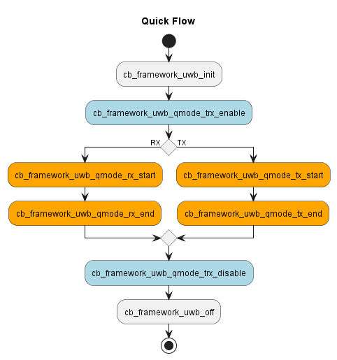

API
SCR
-
void cb_scr_eadc_setup_dft(enEADCDFTMeasure MeasureType)
Sets up the DFT for the EADC (Enhanced Analog-to-Digital Converter).
- Parameters:
MeasureType Type of measurement for the DFT.
-
uint16_t cb_scr_eadc_measure_dft(enEADCDFTMeasure MeasureType, enEADCGain gain)
Measures the DFT using EADC.
- Parameters:
MeasureType Type of DFT measurement.
gain Gain configuration for the EADC.
- Returns:
DFT measurement value.
GPIO
-
void cb_gpio_init(stGPIO_InitTypeDef *GPIO_Init)
Initialize GPIO pins.
This function initializes GPIO pins based on the provided configuration.
- Parameters:
cb_gpio_init [in] Pointer to a structure containing GPIO initialization parameters.
-
void cb_gpio_deinit(enGpioPin GPIO_Pin)
Deinitialize GPIO pins.
This function deinitializes GPIO pins based on the provided pin mask.
- Parameters:
GPIO_Pin [in] The pin or pins to be deinitialized.
-
void cb_gpio_structinit(stGPIO_InitTypeDef *GPIO_Init)
Initialize GPIO configuration structure with default values.
This function initializes the provided GPIO initialization structure with default settings. The default configuration sets the mode to output and the pull-up/pull-down resistor to no pull.
- Parameters:
GPIO_Init [in] Pointer to a GPIO initialization structure that will be initialized with default values.
-
enGPIO_PinState cb_gpio_read_input_pin(enGpioPin GPIO_Pin)
Read the input value of a GPIO pin.
This function reads the input value of a specified GPIO pin.
- Parameters:
GPIO_Pin [in] The pin to be read.
- Returns:
The input state of the GPIO pin (GPIO_PIN_SET or GPIO_PIN_RESET).
-
uint32_t cb_gpio_read_all_input_pins(void)
Read the combined input value of all GPIO pins.
This function reads the combined input value of all GPIO pins and returns it as a single 32-bit value.
- Returns:
A 32-bit value representing the input state of all GPIO pins.
-
enGPIO_PinState cb_gpio_read_output_pin(enGpioPin GPIO_Pin)
Read the output value of a GPIO pin.
This function reads the output value of a specified GPIO pin and returns
- Parameters:
GPIO_Pin [in] The pin to be read.
- Returns:
The output state of the GPIO pin (EN_GPIO_PIN_SET for high, EN_GPIO_PIN_RESET for low).
-
uint32_t cb_gpio_read_all_output_pins(void)
Read the combined output value of all GPIO pins.
This function reads the combined output value of all GPIO pins and returns it as a single 32-bit value.
- Returns:
A 32-bit value representing the output state of all GPIO pins.
-
void cb_gpio_write_pin(enGpioPin GPIO_Pin, enGPIO_PinState PinState)
Write a value to a GPIO pin.
This function writes a specified value to the output of a GPIO pin.
- Parameters:
GPIO_Pin The pin to be written to.
PinState [in] The state to be written to the pin (GPIO_PIN_SET or GPIO_PIN_RESET).
-
void cb_gpio_write_all_pins(uint32_t PinState)
Write a value to all GPIO pins.
This function writes a specified 32-bit value to the output of all GPIO pins.
- Parameters:
PinState The 32-bit value to be written to all GPIO pins.
-
void cb_gpio_toggle_pin(enGpioPin GPIO_Pin)
Toggle the output value of a GPIO pin.
This function toggles the output value of a specified GPIO pin.
- Parameters:
GPIO_Pin [in] The pin to be toggled.
IOMUX
-
void cb_iomux_config(enIomuxGpioSelect enGpio, stIomuxGpioMode *GpioModeSet)
Configures the I/O Multiplexing (IOMUX) settings for a GPIO pin.
This function configures the IOMUX settings for a specified GPIO pin based on the provided configuration parameters.
- Parameters:
enGpio [in] The GPIO pin to configure.
GpioModeSet [in] Pointer to the structure containing GPIO mode and source select settings.
UART
-
void cb_uart_init(stUartConfig uartConfig)
Initialize UART communication with specified configuration.
This function initializes UART communication with the provided configuration.
- Parameters:
uartConfig [in] Configuration structure for UART initialization.
-
void cb_uart_deinit(enUartChannel uartChannel)
Deinitialize UART communication for a specified UART channel.
This function deinitializes the UART communication by disabling the UART module, clearing configuration registers, and disabling interrupts for the specified UART channel.
- Parameters:
uartChannel [in] The UART channel to deinitialize. Use EN_UART_0 or EN_UART_1.
-
void cb_uart_struct_init(stUartConfig *uartConfig)
Initialize a stUartConfig structure with default values.
This function initializes a stUartConfig structure with default UART configuration values. It sets all the configuration parameters to their default values, ensuring that the UART is configured with a standard set of settings when initialized.
- Parameters:
uartConfig [in] Pointer to the stUartConfig structure to be initialized.
-
void cb_uart_cmd(enUartChannel uartChannel, uint8_t newState)
Enable or disable the specified UART channel.
This function enables or disables the specified UART channel for transmission and reception.
- Parameters:
uartChannel [in] The UART channel to enable or disable. Use EN_UART_0 or EN_UART_1.
newState [in] New state of the UART channel. Use ENABLE or DISABLE.
-
void cb_uart_transmit(stUartConfig uartConfig, uint8_t *data, uint16_t size)
Transmit multiple bytes of data.
This function transfer multiple bytes of data, in either SDMA or FIFO mode
- Parameters:
uartConfig [in] Configuration structure for UART initialization.
data [in] The data array to be sent to UART TXD register
size [in] Size of the data array in bytes
-
uint8_t cb_uart_is_tx_busy(stUartConfig uartConfig)
Check if the UART transmission (TXD) is not available.
This function returns true if the TX is not available yet
- Parameters:
uartConfig [in] Configuration structure for UART initialization.
- Returns:
true if TX is busy, false otherwise.
-
void cb_uart_set_rx_num_of_bytes(enUartChannel uartChannel, uint16_t maxBytes)
Set the number of bytes to be received on RXD for a specified UART channel.
This function configures the UART to expect a specified number of bytes to be received on the RXD line for the next data transfer. It updates the buffer size configuration and restarts the receive operation.
- Parameters:
uartChannel The UART channel for which to set the number of bytes to receive. Use EN_UART_0 or EN_UART_1.
maxBytes The number of bytes expected to be received on the RXD line. This value should be within the valid range supported by the UART.
-
uint8_t cb_uart_get_rx_byte(enUartChannel uartChannel)
Gets one byte from the specified UART RXD register.
This function returns a byte read from the specified UART RXD register. It is primarily intended for use in FIFO mode, where data is received one byte at a time.
- Parameters:
uartChannel [in] The UART channel to read from. Use EN_UART_0 or EN_UART_1.
- Returns:
One byte read from the specified UART RXD register.
-
void cb_uart_get_rx_buffer(enUartChannel uartChannel, uint8_t *dest, uint16_t numBytes)
Retrieves data from the UART receive buffer.
This function copies a specified number of bytes from the UART receive buffer into a destination array. The primary use case is for SDMA mode where data is directly transferred from the UART to a memory buffer.
- Parameters:
uartChannel[in] The UART channel from which to retrieve data. Use EN_UART_0 or EN_UART_1.
dest[out] Pointer to the destination array where the received data will be stored.
numBytes[in] The number of bytes to read from the receive buffer and copy to the destination array.
-
uint16_t cb_uart_check_num_received_bytes(enUartChannel uartChannel)
Checks the number of bytes received in the specified UART channel.
This function checks the number of bytes that have been received in the specified UART channel buffer. It reads the relevant status register and extracts the number of received bytes.
- Parameters:
uartChannel [in] The UART channel to check. Use EN_UART_0 or EN_UART_1.
- Returns:
The number of bytes currently available in the specified UART receive buffer.
-
void cb_uart_rx_stop(enUartChannel uartChannel)
Stops the receive operation for the specified UART channel.
This function stops the receiving process for the specified UART channel.
- Parameters:
uartChannel [in] The UART channel to stop. Use EN_UART_0 or EN_UART_1.
-
void cb_uart_rx_restart(enUartChannel uartChannel)
Restarts the receive operation for the specified UART channel.
This function restarts the receive process for the specified UART channel.
- Parameters:
uartChannel [in] The UART channel to restart. Use EN_UART_0 or EN_UART_1.
-
void cb_usart_irq_config(enUartChannel uartChannel, uint16_t uart_int, uint8_t newState)
Configure UART interrupts for a specified UART channel.
This function configures the specified UART channels interrupts based on the provided parameters. It enables or disables the specified interrupt type for the given UART channel.
- Parameters:
uartChannel [in] The UART channel to configure. Use EN_UART_0 or EN_UART_1.
uart_int [in] Specifies the UART interrupts sources to be enabled or disabled. This parameter can be any combination of the values defined in the enUartInt enumeration.
newState [in] The new state for the interrupt. Use ENABLE to enable the interrupt and DISABLE to disable it.
-
uint32_t cb_uart_get_irq_flags(enUartChannel uartChannel)
Get the current UART flags for a specified UART channel.
This function reads the UART status register and returns the current flags. The flags indicate the status of various UART events and errors.
- Parameters:
uartChannel The UART channel to query. Use EN_UART_0 or EN_UART_1.
- Returns:
The current UART flags as a bitmask. Refer to the enUartFlag enumeration for flag definitions.
-
void cb_uart_clear_irq(enUartChannel uartChannel)
Clear interrupt flags for a specified UART channel.
This function clears the interrupt flags for the specified UART channel. It ensures that the interrupt flags are reset to avoid repeated interrupt triggers.
- Parameters:
uartChannel The UART channel for which to clear the interrupt flags. Use EN_UART_0 or EN_UART_1.
-
void cb_uart_0_irqhandler(void)
UART0 interrupt request handler.
This function handles various UART0 interupts and calls corresponding callback.
-
void cb_uart_1_irqhandler(void)
UART1 interrupt request handler.
This function handles various UART1 interupts and calls corresponding callback.
-
void cb_uart_0_rxb_full_app_irq_callback(void)
IRQ callback for UART0 RX buffer full at APP layer This callback is executed when the number of bytes received matches RXB_MAX_BYTES in UART->BUF_SIZE register.
-
void cb_uart_0_txb_empty_app_irq_callback(void)
IRQ callback for UART0 TXB empty at APP layer. Last TX byte has been sent out.
TIMER
-
void cb_timer_init(enTimer enTimer)
Initializes the specified Timer module.
- Parameters:
enTimer Timer module enumeration.
-
void cb_timer_configure_timer(stTimerSetUp *TimerSetUp)
Configures a Timer module based on the provided setup parameters.
- Parameters:
TimerSetUp [in] Pointer to the structure containing timer setup parameters.
-
void cb_timer_deinit(enTimer enTimer)
De-initializes the specified Timer module.
- Parameters:
enTimer Timer module enumeration.
-
void cb_timer_struct_init(stTimerSetUp *TimerSetUp)
Initializes a timer setup structure with default values.
- Parameters:
TimerSetUp [in] Pointer to the timer setup structure to be initialized.
-
void cb_set_timeout_expiration(enTimer enTimer, uint8_t timeoutEvent, uint32_t timeoutVal)
Sets the timeout value for a specific timer event and resets other timeout events to zero.
- Parameters:
enTimer [in] Timer module enumeration.
timeoutEvent [in] The specific timeout event to modify (0-3).
timeoutVal [in] The new timeout value in milliseconds.
-
void cb_timer_disable_timer(enTimer enTimer)
Disables the specified Timer module.
- Parameters:
enTimer [in] Timer module enumeration.
-
void cb_timer_disable_interrupt(void)
Disables interrupts for all timers.
This function disables interrupts for all timers by setting the interrupt enable registers to 0.
-
uint32_t cb_timer_read_toe_value(enTimer enTimer)
Reads the value of the Timeout Enable register for the specified Timer module.
- Parameters:
enTimer [in] Timer module enumeration.
- Returns:
Timeout enable value.
-
void cb_timer_enable(enTimer enTimer)
Starts the specified Timer module.
- Parameters:
enTimer [in] Timer module enumeration.
-
void cb_timer_pause_timer(enTimer enTimer)
Pauses the specified Timer module.
- Parameters:
enTimer [in] Timer module enumeration.
-
void cb_timer_resume_timer(enTimer enTimer)
Resumes the specified Timer module.
- Parameters:
enTimer [in] Timer module enumeration.
-
void cb_timer_latch_counter_to_tov(enTimer enTimer, uint32_t TimerTimeoutEvent)
Latches the counter value to the Timeout Value register for the specified Timer module.
- Parameters:
enTimer [in] Timer module enumeration.
TimerTimeoutEvent [in] Timer timeout event enumeration.
-
uint32_t cb_timer_read_tov_value(enTimer enTimer, uint8_t TimerTimeoutEvent)
Reads the value of the Timeout Value register for the specified Timer module.
- Parameters:
enTimer [in] Timer module enumeration.
TimerTimeoutEvent [in] Timer timeout event enumeration.
- Returns:
Timeout value.
-
unTimerTimeout cb_timer_read_timer_timeout_event(enTimer timer)
Reads the timeout event of the TOE register for the specified Timer module.
- Parameters:
enTimer [in] Timer module enumeration.
- Returns:
unTimerTimeout enum indicate which timeout event has occured.
-
void cb_timer_irq_config(enTimer enTimer, enTimerTimeoutEvent timeoutEvent, uint32_t state)
Configures the interrupt for the specified Timer module.
- Parameters:
enTimer Timer module enumeration.
timeoutEvent Specific interrupt event to configure.
state Interrupt enable state. Set to CB_TRUE to enable, CB_FALSE to disable.
-
uint32_t cb_timer_get_timeout_event_flags(enTimer enTimer)
Get the timeout event flags for the specified Timer module.
- Parameters:
enTimer Timer module enumeration.
- Returns:
Timeout event flags.
-
void cb_timer_clear_timeout_event_flags(enTimer enTimer, uint32_t timeoutEventFlags)
Clears the specified timeout event flags for the Timer module.
- Parameters:
enTimer Timer module enumeration.
timeoutEventFlags Timeout event flags to be cleared. Valid values are 0-3, representing Timeout Event 0 to Timeout Event 3.
-
void cb_timer_0_app_irq_callback(void)
Weak callback function for TIMER 0 interrupt at APP layer.
This function serves as a weak callback that is invoked when an interrupt is triggered by TIMER 0. It is intended to be overridden by the user with a custom implementation.
-
void cb_timer_1_app_irq_callback(void)
Weak callback function for TIMER 1 interrupt at APP layer.
This function serves as a weak callback that is invoked when an interrupt is triggered by TIMER 0. It is intended to be overridden by the user with a custom implementation.
-
void cb_timer_2_app_irq_callback(void)
Weak callback function for TIMER 2 interrupt at APP layer.
This function serves as a weak callback that is invoked when an interrupt is triggered by TIMER 0. It is intended to be overridden by the user with a custom implementation.
-
void cb_timer_3_app_irq_callback(void)
Weak callback function for TIMER 3 interrupt at APP layer.
This function serves as a weak callback that is invoked when an interrupt is triggered by TIMER 0. It is intended to be overridden by the user with a custom implementation.
-
void cb_timer_3_mid_irq_callback(void)
Weak callback function for TIMER 3 interrupt at MID layer.
This function serves as a weak callback that is invoked when an interrupt is triggered by TIMER 0. It is intended to be overridden by the user with a custom implementation.
-
void cb_timer_0_irqhandler(void)
Handler function for TIMER 0 interrupt.
This function is called when an interrupt is triggered by TIMER 0. It clears the interrupt flags based on the timeout events and performs necessary actions.
-
void cb_timer_1_irqhandler(void)
Handler function for TIMER 1 interrupt.
This function is called when an interrupt is triggered by TIMER 1. It clears the interrupt flags based on the timeout events and performs necessary actions.
-
void cb_timer_2_irqhandler(void)
Handler function for TIMER 2 interrupt.
This function is called when an interrupt is triggered by TIMER 2. It clears the interrupt flags based on the timeout events and performs necessary actions.
SPI
-
void cb_spi_init(stSPI_InitTypeDef *InitParameters)
Initializes the SPI module with the specified parameters.
-
void cb_spi_struct_init(stSPI_InitTypeDef *InitParameters)
Initializes the SPI configuration structure with default values.
This function sets the default configuration parameters for the SPI interface.
- Parameters:
InitParameters Pointer to the SPI initialization structure to be initialized.
-
void cb_spi_cmd(uint8_t Cmd)
Enables or disables the SPI module.
This function enables or disables the SPI module based on the provided command.
- Parameters:
Cmd Command to enable or disable the SPI module.
SPI_DISABLE: Disable the SPI module.
SPI_ENABLE: Enable the SPI module.
-
CB_STATUS cb_spi_master_fifo_write(enSPIChipSelect ChipSelct, uint8_t *txdata, uint16_t Length)
Transmits data over SPI in FIFO mode.
- Parameters:
ChipSelct [in] Chip select for SPI device.
txdata [in] Pointer to the data buffer to be transmitted.
Length [in] Number of bytes to transmit.
- Returns:
CB_STATUS Status of the operation, CB_PASS if successful, otherwise CB_FAIL.
-
CB_STATUS cb_spi_master_fifo_read(enSPIChipSelect ChipSelct, uint8_t *rxdata, uint16_t Length)
Reads data from SPI in FIFO mode.
- Parameters:
ChipSelct [in] Chip select for SPI device.
Length [in] Number of bytes to read.
rxdata [out] Pointer to the buffer where received data will be stored.
- Returns:
CB_STATUS Status of the operation, CB_PASS if successful, otherwise CB_FAIL.
-
CB_STATUS cb_spi_master_fifo_write_read(enSPIChipSelect ChipSelct, enTRXCommandReadWriteBit ReadOrWrite, uint8_t command, uint8_t *trxbuffer, uint16_t Length)
Performs single-byte read or write transaction on SPI using FIFO.
- Parameters:
ChipSelct [in] The SPI chip select to use for the transaction.
ReadOrWrite [in] Specifies whether the transaction is read or write.
command [in] Command byte to send in the transaction.
Length [in] Length of data to read or write.
trxbuffer [inout] Pointer to the buffer for read/write data.
- Returns:
CB_STATUS CB_PASS if the transaction is successful, otherwise CB_FAIL.
-
CB_STATUS cb_spi_master_sdma_write(enSPIChipSelect ChipSelct, uint16_t Length, uint32_t StartAddr)
Writes data over SPI in SDMA mode.
- Parameters:
ChipSelct [in] Chip select for SPI device.
Length [in] Number of bytes to transmit.
StartAddr [in] Starting address of the transmit buffer.
- Returns:
CB_STATUS Status of the operation, CB_PASS if successful, otherwise CB_FAIL.
-
CB_STATUS cb_spi_master_sdma_read(enSPIChipSelect ChipSelct, uint16_t Length, uint32_t StartAddr)
Reads data from SPI in SDMA mode.
- Parameters:
ChipSelct [in] Chip select for SPI device.
Length [in] Number of bytes to read.
StartAddr [out] Starting address of the receive buffer.
- Returns:
CB_STATUS Status of the operation, CB_PASS if successful, otherwise CB_FAIL.
-
CB_STATUS cb_spi_master_sdma_write_read(enSPIChipSelect ChipSelct, uint16_t Length, uint32_t TxBufAddr, uint32_t RxBufAddr)
Performs DMA-based write and read transaction on SPI.
- Parameters:
ChipSelct [in] The SPI chip select to use for the transaction.
Length [in] Length of data to transfer.
TxBufAddr [in] DMA buffer address for transmit data.
RxBufAddr [out] DMA buffer address for receive data.
- Returns:
CB_STATUS CB_PASS if the transaction is successfully initiated, otherwise CB_FAIL.
-
CB_STATUS cb_spi_slave_fifo_start(uint16_t Length, spi_responsecallbk p_ResponseCB, spi_completecallbk p_CompletionCB)
Starts SPI operation in slave mode using FIFO.
- Parameters:
Length [in] Length of data to be handled by SPI FIFO.
p_ResponseCB [in] Pointer to the callback function.
p_CompletionCB [in] Pointer to the callback function for completion notification.
- Returns:
CB_STATUS CB_PASS if SPI operation is successfully started, otherwise CB_FAIL.
-
CB_STATUS cb_spi_slave_sdma_start(uint16_t Length, uint32_t TxBufAddr, uint32_t RxBufAddr, spi_completecallbk p_CompletionCB)
Starts SPI operation in slave mode using SDMA.
In SDMA mode, the first byte received by the slave is a clock alignment byte and should be ignored. The actual valid data starts from the second byte. Therefore, the slave to receive n bytes of valid data, the master should send n+1 bytes. After the slave receives n+1 bytes, the valid data will be stored in the buffer starting from the second byte (i.e., indices 1 to n+1), while the first byte (index 0) should be ignored.!!!!!!!!!!!!!!!!! Attention !!!!!!!!!!!!!!!!!!
The host also needs to remove the first byte received when connecting to the slave, that is, the host sends n+1 and can only receive the slave nbyte
- Parameters:
Length [in] Length of data to be handled by SPI DMA. The actual valid data starts with the second byte, so to receive n bytes of valid data, the Length should be set to n+1.
TxBufAddr [in] Memory address of the TX buffer for DMA.
RxBufAddr [in] Memory address of the RX buffer for DMA.
p_CompletionCB [in] Pointer to the callback function for completion notification.
- Returns:
CB_STATUS CB_PASS if SPI operation is successfully started, otherwise CB_FAIL.
-
enTransmissonMode cb_spi_get_current_transmission_mode(void)
Retrieves the current transmission mode of the SPI interface.
-
void cb_spi_irq_config(enSPIINT SPI_IT, uint8_t NewState)
Configures the SPI interrupts.
This function configures the specified SPI interrupt based on the provided command.
- Parameters:
SPI_IT Specifies the SPI interrupt to be configured.
SPI_FRAME_END: Frame end interrupt.
SPI_TX_END: Transmission end interrupt.
SPI_RX_END: Reception end interrupt.
SPI_TXFIFO_EMPTY: TX FIFO empty interrupt.
SPI_TXFIFO_FULL: TX FIFO full interrupt.
SPI_TXB_EMPTY: TX buffer empty interrupt.
SPI_RXFIFO_EMPTY: RX FIFO empty interrupt.
SPI_RXFIFO_FULL: RX FIFO full interrupt.
SPI_RXB_FULL: RX buffer full interrupt.
NewState Command to enable or disable the specified interrupt.
SPI_IT_DISABLE: Disable the specified interrupt.
SPI_IT_ENABLE: Enable the specified interrupt.
CRC
-
void cb_crc_irqhandler(void)
CRC interrupt handler function.
This function is called when a CRC interrupt occurs. It clears and disables the CRC IRQ, retrieves the CRC result, and clears the in-progress flag.
-
void cb_crc_app_irq_callback(void)
Weakly defined CRC interrupt APP layer callback.
This function is called when a CRC interrupt occurs. User can implement custom routines for CRC interrupt inside this function at APP layer.
-
void cb_crc_init(void)
Initializes the CRC module.
This function powers on the CRC module, enables it, and initializes internal flags.
-
void cb_crc_deinit(void)
Deinitializes the CRC module.
This function clears and disables the CRC IRQ, disables the CRC module, and powers off the CRC module.
-
void cb_crc_algo_config(enCRCType CRCType, enCRCInitVal InitVal, enCRCRefOut RefOut, enCRCRefIn RefIn, uint32_t Poly, uint32_t Xor)
Configures the CRC algorithm with specified parameters.
This function configures the CRC (Cyclic Redundancy Check) calculation engine based on the input parameters, including the CRC type (CRC8, CRC16, or CRC32), initial value, input/output reflection, and the polynomial to be used for the CRC computation. The XOR value applied at the end of the calculation can also be specified.
- Parameters:
CRCType [in] The CRC type (EN_CRC8, EN_CRC16, or EN_CRC32) which determines the polynomial size.
InitVal [in] The initial value used in the CRC calculation.
RefOut [in] The output reflection mode (enabled or disabled).
RefIn [in] The input reflection mode (enabled or disabled).
Poly [in] The polynomial to be used for the CRC calculation.
Xor [in] The XOR value applied at the end of the CRC calculation.
-
CB_STATUS cb_crc_process_from_input_data(uint8_t *Data, uint16_t DataLen, enCRCReInit ReInit_Sel)
Starts CRC calculation using provided input data.
This function processes the input data provided in the form of a byte array, performs CRC (Cyclic Redundancy Check) calculation using the APB (Advanced Peripheral Bus) interface, and returns the result. The function supports the reinitialization of the CRC engine if requested, and it uses a polling mechanism to check for completion of the calculation, with a built-in timeout.
- Parameters:
Data [in] Pointer to the input data array for CRC calculation.
DataLen [in] Length of the input data array in bytes.
ReInit_Sel [in] Specifies whether to reinitialize the CRC engine (EN_CRC_ReInit_Enable) or continue with the current CRC configuration.
- Returns:
CB_PASS if the CRC calculation is successful, or CB_FAIL if an error occurs (such as a timeout or if the CRC engine is already busy).
-
CB_STATUS cb_crc_process_from_memory(uint32_t StartAddr, uint16_t DataLen, enCRCReInit ReInit_Sel, enCRCIrq IRQEnable)
Starts CRC calculation on a block of memory data.
This function initiates a CRC (Cyclic Redundancy Check) calculation on a specified block of memory. It can operate in either interrupt mode (IRQ) or polling mode. In IRQ mode, the function will return immediately after starting the calculation, while in polling mode it will wait for the CRC process to complete. Reinitialization of the CRC engine is also supported, allowing for a fresh calculation or continuation of a previous CRC configuration.
- Parameters:
StartAddr [in] The starting address of the memory block to be processed for CRC calculation.
DataLen [in] The length of the memory block in bytes.
ReInit_Sel [in] A flag to indicate whether to reinitialize the CRC engine (EN_CRC_ReInit_Enable) or not.
IRQEnable [in] A flag to indicate whether to enable interrupt mode (CB_TRUE for IRQ mode, CB_FALSE for polling mode).
- Returns:
In IRQ mode, the function returns
CB_PASSif the operation starts successfully. In polling mode, the function returnsCB_PASSif the CRC calculation completes successfully, orCB_FAILif the process times out or the CRC engine is busy.
Sleep & Deep-Sleep
-
CB_STATUS cb_sleep_control(uint32_t slpduration_in_ms)
Enters sleep mode for a specified duration.
This function enters sleep mode for the specified duration in milliseconds.
- Parameters:
slpduration_in_ms [in] The duration of sleep mode in milliseconds.
- Returns:
CB_STATUS The status of the operation (CB_PASS or CB_FAIL).
-
CB_STATUS cb_deep_sleep_control(uint32_t slpduration_in_ms)
Enters deep sleep mode for a specified duration.
This function enters deep sleep mode for the specified duration in milliseconds.
- Parameters:
slpduration_in_ms [in] The duration of deep sleep mode in milliseconds.
- Returns:
CB_STATUS The status of the operation (CB_PASS or CB_FAIL).
UWB-FRAMEWORK
[API Interaction]
{kind=link}
UWB Status |
CB_Framework |
CB_System |
CB_System Description |
|---|---|---|---|
S0 |
cb_framework_uwb_init() |
|
|
S1 |
cb_framework_uwb_rx_start() |
|
|
S2 |
cb_framework_uwb_rx_end() |
|
|
S3 |
cb_framework_uwb_tx_start() |
|
|
S4 |
cb_framework_uwb_tx_end() |
|
|
S5 |
cb_framework_uwb_qmode_trx_enable() |
|
|
S6 |
cb_framework_uwb_qmode_tx_start() / cb_framework_uwb_qmode_rx_start() |
|
|
S7 |
cb_framework_uwb_qmode_tx_end() / cb_framework_uwb_qmode_rx_end() |
|
|
S8 |
cb_framework_uwb_qmode_trx_disable() |
|
|
cb_framework_uwb_off() |
|
|
[UWB Control Flow]
{kind=link}

![skinparam legend {
backgroundColor #GhostWhite
entrySeparator #GhostWhite
}
legend top
<#GhostWhite,#GhostWhite>| |= __Legend__ |
| | |
|<#lightgreen> | Available |
|<#black> | Unavailable |
endlegend
title
<#lightblue>|= Function |= EN_UWB_RX_0 |= EN_UWB_RX_1 |= EN_UWB_RX_2 |= EN_UWB_RX_02 |= EN_UWB_RX_ALL |
| cb_framework_uwb_qmode_rx_start | <#lightgreen> | <#black> | <#black> | <#black> | <#black> |
| cb_framework_uwb_qmode_rx_end | <#lightgreen> | <#black> | <#black> | <#black> | <#black> |
| cb_framework_uwb_rx_start | <#lightgreen> | <#lightgreen> | <#lightgreen> | <#lightgreen> | <#lightgreen> |
| cb_framework_uwb_rx_end | <#lightgreen> | <#lightgreen> | <#lightgreen> | <#lightgreen> | <#lightgreen> |
| cb_framework_uwb_rx_restart | <#lightgreen> | <#lightgreen> | <#lightgreen> | <#lightgreen> | <#lightgreen> |
| cb_framework_uwb_get_rx_tsu_timestamp | <#lightgreen> | <#lightgreen> | <#lightgreen> | <#black> | <#black> |
| cb_framework_uwb_store_rx_cir_register | <#lightgreen> | <#lightgreen> | <#lightgreen> | <#black> | <#black> |
| cb_framework_uwb_get_rx_rssi | <#lightgreen> | <#lightgreen> | <#lightgreen> | <#black> | <#black> |
end title](_images/plantuml-f3f1f38fd03467e7a803fd0d58d04cb3e2052ed2.png)
-
void cb_framework_uwb_init(void)
Initialize the UWB communication transmitter.
This function initializes the UWB communication transmitter by performing various configuration steps. It sets up the required parameters and resources for UWB communication.
-
void cb_framework_uwb_off(void)
Deinitialize the UWB communication transmitter.
This function deinitializes the UWB communication transmitter by performing various cleanup steps. It releases the allocated resources and resets the UWB communication system.
-
void cb_framework_uwb_qmode_trx_enable(void)
Enable the UWB communication transmitter in quick mode.
This function enables the UWB communication transmitter in quick mode by performing various configuration steps. It sets up the required parameters and resources for UWB communication.
-
void cb_framework_uwb_qmode_trx_disable(void)
Disable the UWB communication transmitter in quick mode.
This function disables the UWB communication transmitter in quick mode by performing various cleanup steps. It releases the allocated resources and resets the UWB communication system.
-
void cb_framework_uwb_qmode_tx_start(cb_uwbsystem_packetconfig_st *txPacketConfig, cb_uwbsystem_txpayload_st *txPayload, cb_uwbsystem_tx_irqenable_st *stTxIrqEnable)
Start UWB transmission in quick mode.
- Parameters:
txPacketConfig Configuration for the packet to be transmitted
txPayload Payload data to be transmitted
stTxIrqEnable Interrupt enable configuration for transmission
-
void cb_framework_uwb_qmode_tx_end(void)
End the UWB communication transmitter in quick mode.
This function ends the UWB communication transmitter in quick mode by performing various cleanup steps. It releases the allocated resources and resets the UWB communication system.
-
void cb_framework_uwb_qmode_rx_start(cb_uwbsystem_packetconfig_st *rxPacketConfig, cb_uwbsystem_rx_irqenable_st *stRxIrqEnable)
Start the UWB communication receiver in quick mode.
This function starts the UWB communication receiver in quick mode by performing various configuration steps. It sets up the required parameters and resources for UWB communication.
- Parameters:
rxPacketConfig Configuration for the packet to be received
stRxIrqEnable Interrupt enable configuration for reception
-
void cb_framework_uwb_qmode_rx_end(void)
End the UWB communication receiver in quick mode.
This function ends the UWB communication receiver in quick mode by performing various cleanup steps. It releases the allocated resources and resets the UWB communication system.
-
void cb_framework_uwb_tx_start(cb_uwbsystem_packetconfig_st *txPacketConfig, cb_uwbsystem_txpayload_st *txPayload, cb_uwbsystem_tx_irqenable_st *stTxIrqEnable, cb_uwbframework_trx_startmode_en trxStartMode)
Start the UWB communication transmitter in normal mode.
This function starts the UWB communication transmitter in normal mode by performing various configuration steps. It sets up the required parameters and resources for UWB communication.
- Parameters:
txPacketConfig Configuration for the packet to be transmitted
txPayload Payload data to be transmitted
stTxIrqEnable Interrupt enable configuration for transmission
trxStartMode Start mode (immediate or deferred)
-
void cb_framework_uwb_tx_end(void)
End the UWB communication transmitter in normal mode.
This function ends the UWB communication transmitter in normal mode by performing various cleanup steps. It releases the allocated resources and resets the UWB communication system.
-
void cb_framework_uwb_tx_restart(cb_uwbsystem_tx_irqenable_st *stTxIrqEnable, cb_uwbframework_trx_startmode_en trxStartMode)
Restart UWB transmission in normal mode.
This function restarts the UWB transmission by stopping the current transmission, reconfiguring the TX interrupts, and starting a new transmission based on the specified mode.
- Parameters:
stTxIrqEnable Interrupt enable configuration for transmission
trxStartMode Start mode (immediate or deferred)
-
void cb_framework_uwb_rx_start(cb_uwbsystem_rxport_en enRxPort, cb_uwbsystem_packetconfig_st *rxPacketConfig, cb_uwbsystem_rx_irqenable_st *stRxIrqEnable, cb_uwbframework_trx_startmode_en trxStartMode)
Start UWB reception in normal mode.
- Parameters:
enRxPort The RX port to use for reception
rxPacketConfig Configuration for the packet to be received
stRxIrqEnable Interrupt enable configuration for reception
trxStartMode Start mode (immediate or deferred)
-
void cb_framework_uwb_rx_end(cb_uwbsystem_rxport_en enRxPort)
End UWB reception in normal mode.
- Parameters:
enRxPort The RX port to stop
-
void cb_framework_uwb_rx_restart(cb_uwbsystem_rxport_en enRxPort, cb_uwbsystem_packetconfig_st *rxPacketConfig, cb_uwbsystem_rx_irqenable_st *stRxIrqEnable, cb_uwbframework_trx_startmode_en trxStartMode)
Restarts the UWB receiver with a new configuration.
This function stops the current UWB receiver, applies the specified interrupt configuration, and restarts the receiver based on the selected start mode.
- Parameters:
enRxPort [in] RX port to be restarted (e.g., RX0, RX1, RX2, or ALL).
stRxIrqEnable [in] Pointer to the RX interrupt configuration structure.
trxStartMode [in] Start mode selection:
EN_TRX_START_NON_DEFERRED: start immediately.
EN_TRX_START_DEFERRED: prepare for later start.
-
uint16_t cb_framework_uwb_get_rx_packet_size(cb_uwbsystem_packetconfig_st *config)
Get the size of a received UWB packet.
- Parameters:
config Packet configuration
- Returns:
uint16_t Size of the received packet in bytes
-
void cb_framework_uwb_get_rx_payload(uint8_t *pRxpayloadAddress, uint16_t NumOfByte)
Get the payload of a received UWB packet.
- Parameters:
pRxpayloadAddress Pointer to the buffer where the received payload will be stored
NumOfByte Number of bytes to extract from the received payload
-
uint8_t cb_framework_uwb_get_rx_phr_ranging_bit(cb_uwbsystem_packetconfig_st *config)
Get the ranging bit from the PHR of a received packet.
- Parameters:
config Packet configuration
- Returns:
uint8_t The ranging bit value
-
cb_uwbsystem_rxstatus_un cb_framework_uwb_get_rx_status(void)
Get the status of UWB reception.
- Returns:
cb_uwbsystem_rxstatus_un The current RX status
-
void cb_framework_uwb_get_tx_raw_timestamp(cb_uwbsystem_tx_timestamp_st *txTimestamp)
Get raw timestamp for UWB transmission.
- Parameters:
txTimestamp Pointer to store the TX timestamp
-
void cb_framework_uwb_get_rx_tsu_timestamp(cb_uwbsystem_rx_tsutimestamp_st *rxTsuTimestamp, cb_uwbsystem_rxport_en enRxPort)
Get TSU timestamp for UWB reception.
- Parameters:
rxTsuTimestamp Pointer to store the RX TSU timestamp
enRxPort The RX port from which to get the timestamp
-
void cb_framework_uwb_get_tx_tsu_timestamp(cb_uwbsystem_tx_tsutimestamp_st *txTsuTimestamp)
Get TSU timestamp for UWB transmission.
- Parameters:
txTsuTimestamp Pointer to store the TX TSU timestamp
-
cb_uwbsystem_rx_signalinfo_st cb_framework_uwb_get_rx_rssi(uint8_t rssiRxPorts)
Get RSSI (Received Signal Strength Indicator) for UWB reception.
- Parameters:
rssiRxPorts Bitmask of RX ports to get RSSI from
- Returns:
cb_uwbsystem_rx_signalinfo_st RSSI results for the specified ports
-
void cb_framework_uwb_get_rx_etc_status_register(cb_uwbsystem_rx_etc_statusregister_st *const etcStatus)
Get ETC status register for UWB reception.
- Parameters:
etcStatus Pointer to store the ETC status register
-
void cb_framework_uwb_store_rx_cir_register(cb_uwbsystem_rx_cir_iqdata_st *destArray, cb_uwbsystem_rxport_en enRxPort, uint32_t startingPosition, uint32_t numSamples)
Store CIR (Channel Impulse Response) register data.
- Parameters:
destArray Destination array to store CIR data
enRxPort The RX port from which to get CIR data
startingPosition Starting position in the CIR register
numSamples Number of samples to store
-
double cb_framework_uwb_calculate_distance(cb_uwbframework_rangingdatacontainer_st s_stInitiatorDataContainer, cb_uwbframework_rangingdatacontainer_st s_stResponderDataContainer)
Calculate distance based on ranging data.
- Parameters:
s_stInitiatorDataContainer Ranging data from the initiator
s_stResponderDataContainer Ranging data from the responder
- Returns:
double Calculated distance in meters
-
void cb_framework_uwb_calculate_initiator_tround_treply(cb_uwbframework_rangingdatacontainer_st *s_stInitiatorDataContainer, cb_uwbsystem_tx_tsutimestamp_st s_stTxTsuTimestamp0, cb_uwbsystem_tx_tsutimestamp_st s_stTxTsuTimestamp1, cb_uwbsystem_rx_tsutimestamp_st s_stRxTsuTimestamp0)
Calculate round and reply times for the initiator.
- Parameters:
s_stInitiatorDataContainer Pointer to store the calculated data
s_stTxTsuTimestamp0 First TX TSU timestamp
s_stTxTsuTimestamp1 Second TX TSU timestamp
s_stRxTsuTimestamp0 RX TSU timestamp
-
void cb_framework_uwb_calculate_responder_tround_treply(cb_uwbframework_rangingdatacontainer_st *s_stResponderDataContainer, cb_uwbsystem_tx_tsutimestamp_st s_stTxTsuTimestamp0, cb_uwbsystem_rx_tsutimestamp_st s_stRxTsuTimestamp0, cb_uwbsystem_rx_tsutimestamp_st rxTsuTimestamp1)
Calculate round and reply times for the responder.
- Parameters:
s_stResponderDataContainer Pointer to store the calculated data
s_stTxTsuTimestamp0 TX TSU timestamp
s_stRxTsuTimestamp0 First RX TSU timestamp
rxTsuTimestamp1 Second RX TSU timestamp
-
void cb_framework_uwb_configure_event_time_stamp_mask(enUwbEventTimestampMask eventTimestampMask, enUwbEventIndex eventIndex)
Configure event timestamp mask for UWB events.
This function configures which UWB events will generate timestamps. The timestamp mask determines which events are monitored and recorded for timing purposes.
- Parameters:
eventTimestampMask Bitmask specifying which events should generate timestamps
eventIndex Index of the event to configure (0-31)
-
void cb_framework_uwb_enable_scheduled_trx(cb_uwbframework_trx_scheduledconfig_st repeatedTrxConfig)
Enable scheduled UWB transmit/receive operations.
Activates scheduled UWB transactions based on the provided configuration. This allows for timed/periodic UWB operations like using absolute timer. absolute timers.
- Parameters:
repeatedTrxConfig Configuration structure containing timing parameters and operation modes for the scheduled transactions
-
void cb_framework_uwb_disable_scheduled_trx(cb_uwbframework_trx_scheduledconfig_st repeatedTrxConfig)
Disable scheduled UWB transmit/receive operations.
Stops any active scheduled UWB transactions and disables the absolute timers associated with the provided configuration.
- Parameters:
repeatedTrxConfig Configuration structure of the scheduled transactions to disable
-
void cb_framework_uwb_configure_scheduled_trx(cb_uwbframework_trx_scheduledconfig_st repeatedTrxConfig)
Configure parameters for scheduled UWB transactions.
Sets up the configuration for scheduled UWB transactions including timing parameters, operation modes (TX/RX), and event triggers. This function is called after a transaction completes to reconfigure the system for the next scheduled transaction in periodic operations.
- Parameters:
repeatedTrxConfig Configuration structure containing all parameters for the scheduled UWB transactions
-
void cb_framework_uwb_rxconfig_cfo_gain(cb_uwbsystem_rxconfig_cfo_gain_en enReset, cb_uwbsystem_rx_dbb_config_st *stRxCfg_CfoGainBypass)
Configure CFO and gain settings for UWB receiver.
This function configures the Carrier Frequency Offset (CFO) and gain settings for the UWB receiver. It either resets the settings to default values or applies custom configuration.
- Parameters:
enReset Reset flag - if EN_UWB_CFO_GAIN_RESET, resets to defaults, otherwise applies custom config
stBypass_cfg Pointer to custom CFO and gain configuration structure. Only used if enReset is not EN_UWB_CFO_GAIN_RESET.
-
cb_uwbalg_poa_outputperpacket_st cb_framework_uwb_pdoa_cir_processing(enUwbPdoaCalType calType, uint8_t packageNum, const uint8_t numRxUsed, const cb_uwbsystem_rx_cir_iqdata_st *cirRegisterData, uint16_t cirDataSize)
Process CIR data for PDoA.
- Parameters:
calType Type of PDoA calculation
packageNum Package number
numRxUsed Number of RX antennas used
cirRegisterData CIR register data
cirDataSize Size of CIR data
- Returns:
cb_uwbalg_poa_outputperpacket_st PDoA output for the packet
-
void cb_framework_uwb_pdoa_calculate_result(cb_uwbsystem_pdoaresult_st *s_stPdoaOutputResult, enUwbPdoaCalType CIR_CalculationType, uint8_t NumOfPackage)
Calculate PDoA result.
- Parameters:
s_stPdoaOutputResult Pointer to store the PDoA result
CIR_CalculationType Type of CIR calculation
NumOfPackage Number of packages
-
void cb_framework_uwb_pdoa_calculate_aoa(cb_uwbsystem_pdoa_3ddata_st pdoa_result, float pd01_bias, float pd02_bias, float pd12_bias, float *azi_result, float *ele_result)
Calculate Angle of Arrival (AoA) from PDoA data.
- Parameters:
pdoa_result PDoA 3D data containing phase differences between antenna pairs
pd01_bias Phase difference bias between antenna 0 and 1
pd02_bias Phase difference bias between antenna 0 and 2
pd12_bias Phase difference bias between antenna 1 and 2
azi_result Pointer to store the calculated azimuth angle in degrees
ele_result Pointer to store the calculated elevation angle in degrees
oofov_flag Pointer to store the out of FOV flag
-
double cb_framework_uwb_pdoa_calculate_mean(double *array, uint32_t size)
Calculate mean of an array of doubles.
- Parameters:
array Array of doubles
size Size of the array
- Returns:
double Mean value
-
int cb_framework_uwb_pdoa_qsort_compare(const void *a, const void *b)
Comparison function for qsort.
- Parameters:
a First element to compare
b Second element to compare
- Returns:
int Result of comparison
-
void cb_framework_uwb_pdoa_calculate_mean_and_median(double *s_pdoaEstimated, uint8_t NumOfPackage, double *mean, double *median)
Calculate mean and median of PDoA estimates.
- Parameters:
s_pdoaEstimated Array of PDoA estimates
NumOfPackage Number of packages
mean Pointer to store the mean value
median Pointer to store the median value
UWB-System
-
void cb_system_uwb_ram_init(void *pTxRamAddr, void *pRxRamAddr, uint32_t TxRamSize, uint32_t RxRamSize)
Initializes the UWB RAM for transmission and reception.
This function initializes the Ultra-Wideband (UWB) RAM by setting up the transmission (Tx) and reception (Rx) RAM addresses and sizes. It prepares the memory by calling the
CB_SYSTEM_UwbSysRamInitfunction with the specified arguments. Once the addresses and sizes are initialized, it clears the targeted memory regions for both transmission and reception usingcb_system_uwb_tx_memclrandcb_system_uwb_rx_memclrrespectively.- Parameters:
pTxRamAddr Pointer to the base address of the Tx RAM.
pRxRamAddr Pointer to the base address of the Rx RAM.
TxRamSize Size of the Tx RAM.
RxRamSize Size of the Rx RAM.
-
void cb_system_uwb_init(void)
Initialize the UWB communication transmitter.
This function initializes the UWB communication transmitter by performing various configuration steps. It sets up the required parameters and resources for UWB communication.
-
void cb_system_uwb_config_tx(cb_uwbsystem_packetconfig_st *config, cb_uwbsystem_txpayload_st *txPayload, cb_uwbsystem_tx_irqenable_st *stTxIrqEnable)
Configures the UWB TX (Transmitter) settings.
- Parameters:
config Pointer to the UWB packet configuration structure.
txPayload Pointer to the UWB TX payload structure.
stTxIrqEnable Pointer to the UWB TX interrupt enable structure.
-
void cb_system_uwb_config_rx(cb_uwbsystem_packetconfig_st *config, cb_uwbsystem_rx_irqenable_st *stRxIrqEnable, cb_uwbsystem_rx_dbb_cfo_st *stBypass_cfo)
Configures the UWB receiver with packet detection and CFO bypass settings.
- Parameters:
config Pointer to packet configuration structure
stRxIrqEnable Pointer to RX IRQ enable configuration structure
stBypass_cfo Pointer to CFO bypass configuration structure
-
void cb_system_uwb_configure_rx_operation_mode(cb_uwbsystem_rxoperationmode_en mode)
Configures the UWB RX operation mode.
- Parameters:
mode The desired UWB RX operation mode.
-
void cb_system_uwb_rx_init(cb_uwbsystem_rxport_en enRxPort)
Initialize the UWB communication for RX.
-
void cb_system_uwb_rx_start(cb_uwbsystem_rxport_en enRxPort, cb_uwbsystem_rx_dbb_gain_st *stBypass_gain)
Starts the UWB (Ultra-Wideband) receiver on the specified port.
This function starts the UWB receiver on the specified port with the given gain settings. It configures the receiver gain parameters and enables reception on the selected port.
- Parameters:
enRxPort The UWB receiver port to start.Can be a single port (EN_UWB_RX_0, EN_UWB_RX_1, EN_UWB_RX_2) or a combination of ports (EN_UWB_RX_02, EN_UWB_RX_ALL)
stBypass_gain Pointer to structure containing gain bypass configuration parameters.
-
void cb_system_uwb_rx_stop(cb_uwbsystem_rxport_en enRxPort)
Stops the UWB (Ultra-Wideband) receiver on the specified port.
- Parameters:
enRxPort The UWB receiver port to stop. Can be a single port (EN_UWB_RX_0, EN_UWB_RX_1, EN_UWB_RX_2) or a combination of ports (EN_UWB_RX_02, EN_UWB_RX_ALL)
-
void cb_system_uwb_rx_off(cb_uwbsystem_rxport_en enRxPort)
Turns off the UWB (Ultra-Wideband) receiver on the specified port.
- Parameters:
enRxPort The UWB receiver port to turn off.Can be a single port (EN_UWB_RX_0, EN_UWB_RX_1, EN_UWB_RX_2) or a combination of ports (EN_UWB_RX_02, EN_UWB_RX_ALL)
-
void cb_system_uwb_configure_tx_irq(cb_uwbsystem_tx_irqenable_st *irqEnable)
Configures the UWB transmission interrupts.
This function resets the necessary registers before configuring UWB transmission interrupts. It enables or disables interrupts based on the provided parameters.
- Parameters:
irqEnable Pointer to structure containing the UWB interrupt enable flags.
txDone: If true, enables the transmission done interrupt.
sfdDone: If true, enables the SFD mark interrupt.
-
void cb_system_uwb_configure_rx_irq(cb_uwbsystem_rx_irqenable_st *stRxIrqEnable)
Configures the UWB reception interrupts.
This function configures UWB reception interrupts based on the provided parameters. It sets up the necessary masks and enables the corresponding interrupts.
- Parameters:
stRxIrqEnable Pointer to structure containing the UWB reception interrupt enable flags.
rx0Done: If true, enables the RX0 done interrupt.
rx0PdDone: If true, enables the RX0 preamble detected interrupt.
rx0SfdDetDone: If true, enables the RX0 SFD detected interrupt.
rx1Done: If true, enables the RX1 done interrupt.
rx1PdDone: If true, enables the RX1 preamble detected interrupt.
rx1SfdDetDone: If true, enables the RX1 SFD detected interrupt.
rx2Done: If true, enables the RX2 done interrupt.
rx2PdDone: If true, enables the RX2 preamble detected interrupt.
rx2SfdDetDone: If true, enables the RX2 SFD detected interrupt.
rxStsCirEnd: If true, enables the RX status CIR end interrupt.
rxPhrDetected: If true, enables the RX PHR detected interrupt.
rxDone: If true, enables the RX done interrupt.
-
uint32_t cb_system_uwb_get_rx_done_timestamp(void)
Get the Rx Done timstamp info from the cb_uwbsystem_rx_tsu_st struct.
- Returns:
rx_done timestamp
-
void cb_system_uwb_tx_restart(void)
Reinitializes the UWB periodic transmission system.
This function reconfigure the digital side for UWB TX.
-
void cb_system_uwb_tx_prepare_payload(uint8_t *pTxpayloadAddress, uint16_t SizeInByte)
Prepare Payload/PSDU for UWB Tx Phy.
-
void cb_system_uwb_rx_get_payload(uint8_t *pRxpayloadAddress, uint16_t SizeInByte)
Read UWB Rx Payload/PSDU Content.
-
void cb_system_uwb_set_freq_offset_calcode(uint8_t enCalcode)
Sets the frequency offset calibration code.
This function updates the global variable
g_freqOffsetCalCodewith the provided calibration code. This code is used to adjust the frequency offset for accurate signal processing.- Parameters:
enCalcode The frequency offset calibration code to be set. This value should be within the valid range for frequency calibration.
-
void cb_system_uwb_trx_stop(void)
Stops the transmitter and receiver operation.
This function halts the operation of the transmitter and receiver by calling the external system function to stop the TRX.
-
cb_uwbsystem_rx_phrstatus_st cb_system_uwb_get_rx_phr_status(void)
Retrieves the Packet Header (PHR) status.
This function reads the packet status from the RX0 registers and extracts the PHR status information including the PHR security and dedicated indicators as well as the RX0 packet status.
- Returns:
cb_uwbsystem_rx_phrstatus_st A structure containing the PHR status flags:
phrSec: Indicates if the PHR is secure (1) or not (0).
phrDed: Indicates if the PHR is dedicated (1) or not (0).
rx0Ok: Indicates if the RX0 packet is okay (1) or not (0).
-
uint32_t cb_system_uwb_get_rx_packet_phr(void)
Gets the received packets Packet Header (PHR).
This function retrieves the PHR from the received packet by reading the relevant bits from the RX packet status register.
- Returns:
uint32_t The value of the received packets PHR.
-
void cb_system_uwb_set_rx_threshold(uint32_t threshold)
Sets the UWB threshold value.
This function sets the global UWB threshold value to the specified parameter. This value can be used for various threshold checks within the UWB system.
- Parameters:
threshold The threshold value to be set for the UWB system.
-
void cb_system_uwb_set_gain_rx_init(uint32_t gainRxInit)
Initializes the receiver gain setting.
This function sets the initial gain value for the receiver. The gain value is limited to a maximum of 7 to ensure it stays within the allowable range. If the provided gain exceeds this maximum, it is capped to 7.
- Parameters:
gainRxInit The initial gain value for the receiver (0 to 7).
-
float cb_system_get_chip_temperature(void)
Retrieves the current temperature of the chip.
This function reads the chips temperature
- Returns:
The current temperature of the chip in degrees Celsius.
-
CB_STATUS cb_system_rc_calibration(void)
Perform a one-time calibration of the RC clock.
This function calibrates the drift time of the RC clock to improve timing accuracy. The calibration process adjusts the RC clock to compensate for environmental or operational factors that might affect its frequency stability.
- Returns:
CB_PASS or CB_FAIL. Fail if calibration is in-progress.
-
CB_STATUS cb_system_start_periodic_rc_calibration(uint32_t PeriodicIntervalInMs)
Start periodic RC clock calibration with a specified interval.
This function enables periodic calibration of the RC clock The periodic calibration helps to continuously compensate for RC clock drift, ensuring accurate timing over extended periods. This is especially useful in systems where timing precision is critical, and the RC clock drift may vary due to environmental or operational changes.
- Parameters:
PeriodicIntervalInMs The interval time, in milliseconds
- Returns:
CB_PASS or CB_FAIL. Fail if calibration is in-progress.
-
void cb_system_stop_rc_calibration(void)
Stop RC clock calibration.
This function disables the calibration process of the RC clock. It can be used when periodic calibration is no longer required if the timing precision is not critical.
-
uint8_t cb_system_uwb_get_tx_power_code(void)
Get the transmission power code from the uwb system configuration.
This function returns the current transmission power code as stored in the system configuration.
- Returns:
uint8_t The uwb transmission power code.
-
void cb_system_uwb_set_tx_power_code(uint8_t TxPowerCode)
Sets the UWB transmission power code.
- Parameters:
TxPowerCode The transmission power code to be set.
-
cb_uwbsystem_rxoperationmode_en cb_system_uwb_get_rx_opmode(void)
Retrieves the current UWB receiver operation mode.
- Returns:
The current UWB receiver operation mode as an cb_uwbsystem_rxoperationmode_en enum.
-
void cb_system_uwb_set_rx_opmode(cb_uwbsystem_rxoperationmode_en RxOperationMode)
Sets the UWB receiver operation mode.
- Parameters:
RxOperationMode The receiver operation mode to be set, as an cb_uwbsystem_rxoperationmode_en enum.
-
cb_uwbsystem_systemconfig_st cb_system_uwb_get_system_config(void)
Retrieves the current UWB system configuration.
- Returns:
The current UWB system configuration as an cb_uwbsystem_systemconfig_st structure.
-
void cb_system_uwb_set_system_config(cb_uwbsystem_systemconfig_st *newConfig)
Sets the UWB system configuration.
- Parameters:
newConfig Pointer to the new UWB system configuration to be set.
-
void cb_system_chip_init(void)
Initializes the chip system, including reading the chip ID, initializing PMU, setting RF parameters, and configuring voltage and temperature sensing.
This function performs several key chip initialization tasks:
Reads the chip ID and checks the TO (Test Operations) version.
Initializes the PMU (Power Management Unit) based on the TO version.
Sets the RF (Radio Frequency) parameters.
Configures voltage and temperature sensing, including temperature compensation.
-
uint16_t cb_system_uwb_get_rx_packet_size(cb_uwbsystem_packetconfig_st *config)
Get the received packets PHR (Physical Layer Header).
This function retrieves the Physical Layer Header (PHR) from the received packet, which contains information about the packets size and type.
- Returns:
The received packets PHR value.
-
uint8_t cb_system_uwb_get_rx_phr_ranging_bit(cb_uwbsystem_packetconfig_st *config)
Get the Rx PHR Ranging bit infomation.
This function retrive PHR Ranging bit infomation of the received packet
- Parameters:
config Pointer to UWB configuration parameter structure
- Returns:
Rx PHR Ranging bit.
-
void cb_system_uwb_get_tx_raw_timestamp(cb_uwbsystem_tx_timestamp_st *txTimestamp)
Retrieve the TX timestamps.
This function retrieves the timestamps related to the transmission start, SFD mark, STS1 mark, STS2 mark, and transmission completion. These timestamps are read from specific memory-mapped registers and stored in the provided
cb_uwbsystem_tx_timestamp_ststructure.The
cb_uwbsystem_tx_timestamp_ststructure contains the following members:txStart: TX start timestamp.sfdMark: SFD mark timestamp.sts1Mark: STS 1 mark timestamp.sts2Mark: STS 2 mark timestamp.txDone: TX done timestamp.
- Parameters:
txTimestamp Pointer to a
cb_uwbsystem_tx_timestamp_ststructure where the retrieved timestamps will be stored.
-
void cb_system_uwb_get_tx_tsu_timestamp(cb_uwbsystem_tx_tsutimestamp_st *outTxTsu)
Retrieves the transmitter TSU (Timestamp Unit) timestamp.
This function reads the transmitter timestamp from the hardware register, processes it to remove the lower 2 bits, and then converts it into integer and fractional parts. The calculated timestamp is stored in the provided
cb_uwbsystem_tx_tsutimestamp_ststructure.- Parameters:
p_txTsuTimestamp [out] Pointer to a
cb_uwbsystem_tx_tsutimestamp_ststructure where the retrieved timestamp will be stored. The structure will be updated with the integer and fractional components of the timestamp.
-
void cb_system_uwb_get_rx_raw_timestamp(cb_uwbsystem_rx_tsu_st *rxTsu)
Fetches RxTSU data from the hardware registers.
This function reads data from specific memory addresses corresponding to various RxTSU events and stores them into the provided data structure.
- Parameters:
rxTsu Pointer to the structure where RxTSU data will be stored.
-
void cb_system_uwb_get_rx_tsu_timestamp(cb_uwbsystem_rx_tsutimestamp_st *rxTsuTimestamp, cb_uwbsystem_rxport_en enRxPort)
Retrieves the RX TSU timestamp.
This function retrieves the timestamp of the RX SFD Mark, which consists of an integer part and a fractional part. The integer part represents the time in counts of 1/124.8MHz (~8ns), while the fractional part represents the time in counts of 1/124.8MHz/512 (~15.6ps). The complete RX TSU timestamp is stored in the provided
cb_uwbsystem_rx_tsutimestamp_ststructure, which includes:rxTsuInt: The integer part of the RX TSU timestamp, indicating the time in counts of 1/124.8MHz.rxTsuFrac: The fractional part of the RX TSU timestamp, indicating the time in counts of 1/124.8MHz/512.rxTsu: The complete RX TSU timestamp as a double, combining both the integer and fractional parts for higher precision.
- Parameters:
rxTsuTimestamp Pointer to the
cb_uwbsystem_rx_tsutimestamp_ststructure where the retrieved RX TSU timestamp will be stored.enRxPort The RX port identifier used for fetching the RX TSU data.
-
void cb_system_uwb_store_rx_tsu_status(cb_uwbsystem_rx_tsustatus_st *p_rxTsuStatus, cb_uwbsystem_rx_tsu_st *p_rxTimeStampData, cb_uwbsystem_rxport_en enRxPort)
Stores the RX TSU status and timestamp data.
This function retrieves the RX TSU status and timestamp data from the hardware registers and stores them in the provided structures. It also handles the RX port selection for the data retrieval.
- Parameters:
p_rxTsuStatus Pointer to the structure where the RX TSU status will be stored.
p_rxTimeStampData Pointer to the structure where the RX timestamp data will be stored.
enRxPort The RX port from which to retrieve the data (e.g., EN_UWB_RX_0, EN_UWB_RX_1, EN_UWB_RX_2).
-
void cb_system_uwb_store_rx_cir_register(cb_uwbsystem_rx_cir_iqdata_st *destArray, cb_uwbsystem_rxport_en enRxPort, uint32_t startingPosition, uint32_t numSamples)
Copies CIR register data into the provided array of
cb_uwbsystem_rx_cir_iqdata_st.- Parameters:
destArray Pointer to the destination array of
cb_uwbsystem_rx_cir_iqdata_st.enRxPort RX port number (used for address calculation).
startingPosition Offset within the CIR register memory.
numSamples Number of
cb_uwbsystem_rx_cir_iqdata_stsamples to copy.
-
cb_uwbalg_poa_outputperpacket_st cb_system_uwb_pdoa_cir_processing(enUwbPdoaCalType calType, uint8_t packageNum, const uint8_t numRxUsed, const cb_uwbsystem_rx_cir_iqdata_st *cirRegisterData, uint16_t cirDataSize)
Processes the CIR (Channel Impulse Response) data for UWB PDOA (Phase Difference of Arrival).
This function processes the CIR data for UWB PDOA calibration and returns the results. It takes the calibration type, package number, number of RX channels used, and CIR data as input parameters. The function performs the necessary calculations and returns the processed results in a
cb_uwbalg_poa_outputperpacket_ststructure.- Parameters:
calType The calibration type to be used for processing.
packageNum The package number for which the processing is done.
numRxUsed The number of RX channels used in the processing.
cirRegisterData Pointer to the CIR register data to be processed.
cirDataSize The size of the CIR data in bytes.
- Returns:
A structure containing the processed results of type
cb_uwbalg_poa_outputperpacket_st.
-
uint8_t cb_system_uwb_get_rx_cir_quality_flag(void)
Retrieve the CIR quality flag.
This function retrieves the quality flag for the Channel Impulse Response (CIR) by first storing the CIR register data and then performing a quality check on the stored data. It calls the
cb_system_uwb_store_rx_cir_registerfunction to obtain the necessary register values and subsequently callsCB_SYSTEM_cir_quality_checkto evaluate the quality of the CIR.- Returns:
The CIR quality flag as a uint8_t, indicating the quality status of the CIR.
-
cb_uwbsystem_rx_dcoc_st cb_system_uwb_get_rx_dcoc(cb_uwbsystem_rxport_en enRxPort)
Get the Digital Compensation Offset Correction (DCOC) for a specified receiver port.
This function retrieves the Digital Compensation Offset Correction (DCOC) values for a specified UWB receiver port. It reads the corresponding hardware registers to obtain the I and Q components of the DCOC, which are then converted from unsigned to signed integers using twos complement representation.
- Parameters:
enRxPort The UWB receiver port from which to get the DCOC (e.g., EN_UWB_RX_0, EN_UWB_RX_1, EN_UWB_RX_2, or EN_UWB_RX_ALL).
- Returns:
A struct of type
cb_uwbsystem_rx_dcoc_stcontaining the DCOC Q and I values.
-
cb_uwbsystem_rx_signalinfo_st cb_system_uwb_get_rx_rssi(cb_uwbsystem_rxport_en rssiRxPorts)
Retrieve the RSSI (Received Signal Strength Indicator) values for specified RX ports.
This function reads the RSSI values from the specified UWB RX ports and compensates for gain based on predefined compensation values. The function returns a structure containing the RSSI results for each RX port specified in the
rssiRxPortsparameter.- Parameters:
rssiRxPorts A bitmask indicating which RX ports to retrieve RSSI values from. Valid values are EN_UWB_RX_0, EN_UWB_RX_1, and EN_UWB_RX_2.
- Returns:
A structure of type
cb_uwbsystem_rx_signalinfo_stcontaining the RSSI values, gain indices, CFO estimates, and DCOC results for the specified RX ports.
-
void cb_system_uwb_get_rx_etc_status_register(cb_uwbsystem_rx_etc_statusregister_st *const etcStatus)
Get the etc status logging.
This function retrieves the status register value of the etc register status.\
- Parameters:
etcStatus Pointer to output cb_uwbsystem_rx_etc_statusregister_st.
-
uint32_t cb_system_uwb_get_tx_rf_pll_lock(void)
Gets the TX RF PLL lock status.
- Returns:
The lock status of the TX RF PLL
-
cb_uwbsystem_rxstatus_un cb_system_uwb_get_rx_status(void)
Get the status register value of the UWB communication module.
This function retrieves the status register value of the UWB communication module. It reads the status register and returns the value.
- Returns:
Status register value.
-
uint16_t cb_system_uwb_get_rx_cir_ctl_idx(void)
Reads the Cir Ctl Idx value.
- Returns:
CirCtlidx value
-
void cb_system_uwb_abs_timer_on(enUwbAbsoluteTimer enAbsoluteTimer)
Enables the UWB absolute timer.
- Parameters:
enAbsoluteTimer The absolute timer to enable.
-
void cb_system_uwb_abs_timer_off(enUwbAbsoluteTimer enAbsoluteTimer)
Disables the UWB absolute timer.
- Parameters:
enAbsoluteTimer The absolute timer to disable.
-
void cb_system_uwb_abs_timer_clear_internal_occurence(enUwbAbsoluteTimer enAbsoluteTimer)
Clears the internal occurrence of the UWB absolute timer.
- Parameters:
enAbsoluteTimer The absolute timer to clear.
-
void cb_system_uwb_abs_timer_configure_timeout_value(enUwbAbsoluteTimer enAbsoluteTimer, uint32_t baseTime, uint32_t targetTimeoutTime)
Configures the timeout value for the UWB absolute timer.
- Parameters:
enAbsoluteTimer The absolute timer to configure.
baseTime The base time for the timer.
targetTimeoutTime The target timeout time.
-
void cb_system_uwb_abs_timer_configure_event_commander(enUwbEnable control, enUwbAbsoluteTimer enAbsoluteTimer, enUwbEventControl uwbEventControl)
Configures the event commander for the UWB absolute timer.
- Parameters:
control The enable/disable control for the event.
enAbsoluteTimer The absolute timer to configure.
uwbEventControl The event control settings.
-
void cb_system_uwb_enable_event_timestamp(enUwbEnable enable)
Enables or disables the event timestamp functionality.
- Parameters:
enable Enable or disable control.
-
void cb_system_uwb_configure_event_timestamp_mask(enUwbEventTimestampMask eventTimestampMask, enUwbEventIndex uwbEventIndex)
Configures the event timestamp mask.
- Parameters:
eventTimestampMask The mask for the event timestamp.
uwbEventIndex The index of the UWB event.
Warning
doxygenfunction: Cannot find function cb_system_uwb_get_event_timestamp_value in doxygen xml output for project CBU5000V210 from directory: C:\Users\Markus\AppData\Local\Temp\tmp6w4t7xta\xml
-
double cb_system_uwb_alg_pdoa_estimation(double poa_deg1, double poa_deg2)
Estimates the PDOA (Phase Difference of Arrival) using the given angles.
- Parameters:
poa_deg1 The first angle in degrees.
poa_deg2 The second angle in degrees.
- Returns:
The estimated PDOA value.
-
double cb_system_uwb_alg_prop_calculation(cb_uwbsystem_rangingtroundtreply_st *result1, cb_uwbsystem_rangingtroundtreply_st *result2)
Calculates the propagation time using ranging results.
- Parameters:
result1 The first ranging result.
result2 The second ranging result.
- Returns:
The calculated propagation time.
-
stAOA_CompensatedData cb_system_uwb_aoa_biascomp(cb_uwbsystem_pdoa_3ddata_st pdoa_raw, float pd01_bias, float pd02_bias, float pd12_bias)
Compensates for the 3D antenna bias in AOA (Angle of Arrival) calculations.
- Parameters:
pdoa_raw The raw PDOA 3D data containing phase differences between antenna pairs
pd01_bias Phase difference bias between antenna 0 and 1 (in degrees)
pd02_bias Phase difference bias between antenna 0 and 2 (in degrees)
pd12_bias Phase difference bias between antenna 1 and 2 (in degrees)
- Returns:
stAOA_CompensatedData Structure containing the bias-compensated phase differences
-
void cb_system_uwb_aoa_lut_full3d(stAOA_CompensatedData *AOA_PD, st_antenna_attribute_3d *ant_attr, cb_uwbaoa_lut_attribute_st *lut_attr, float *azi_result, float *ele_result)
Calculates the 3D AOA (Angle of Arrival) using compensated data and lookup tables.
- Parameters:
AOA_PD Pointer to structure containing compensated phase differences
ant_attr Pointer to antenna attributes structure containing antenna positions and type
lut_attr Pointer to LUT attributes structure containing reference data and parameters
azi_result Pointer to store the calculated azimuth angle in degrees
ele_result Pointer to store the calculated elevation angle in degrees
-
void cb_system_uwb_aoa_lut_full2d(float *pd_azi, float *ele_ref, st_antenna_attribute_2d *ant_attr, cb_uwbaoa_lut_attribute_st *lut_attr, float *azi_result)
Calculates the 2D AOA (Angle of Arrival) using phase differences and lookup tables.
- Parameters:
pd_azi Pointer to phase difference for azimuth calculation
ele_ref Pointer to reference elevation angle in degrees
ant_attr Pointer to 2D antenna attributes structure containing antenna positions and type
lut_attr Pointer to LUT attributes structure containing reference data and parameters
azi_result Pointer to store the calculated azimuth angle in degrees
- Returns:
void